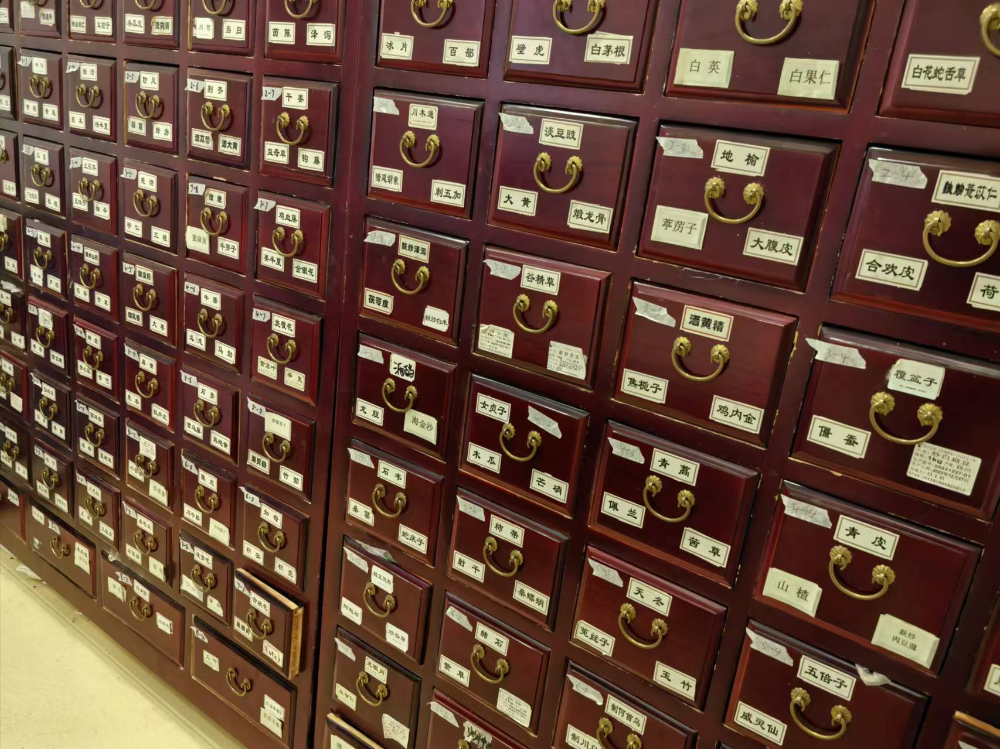
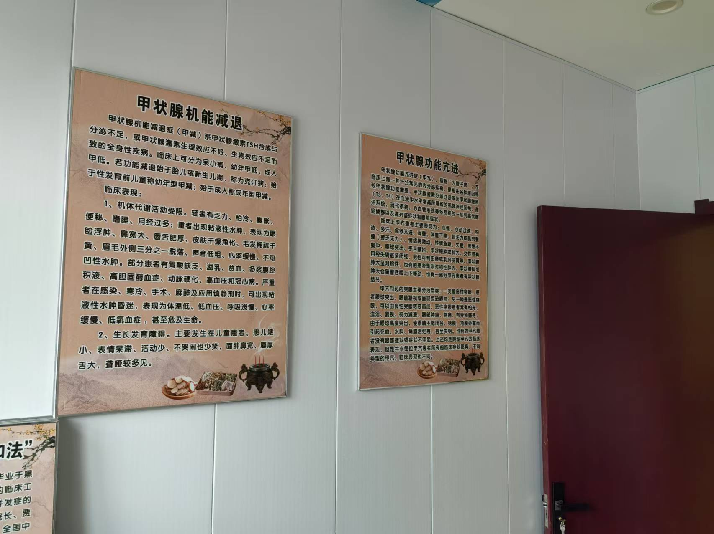

长春市右安综合门诊：专业医疗，贴心守护
医院概况
在长春市，有一家备受赞誉的医疗门诊——右安综合门诊。它以专业的医疗服务和贴心的人文关怀，成为老百姓健康的守护者。
一楼科室介绍
门诊一楼，设施完备，涵盖内科、儿科等重要科室。拥有先进的检测设备，能进行精准的各项检验，为疾病诊断提供准确依据。
二楼中医国医堂
中医国医堂汇聚经验丰富的中医专家，提供个性化的中医诊疗方案。理疗、针灸、推拿等项目，帮助患者通过中医疗法恢复健康。
服务理念
每一位医护人员秉持“以患者为中心”的理念，用耐心和爱心对待患者，注重心理需求与康复指导，让患者感受家的温暖。
医学资讯
- 如何预防流感？秋冬季节做好保暖，保持个人卫生。
- 骨质疏松防治小知识，补钙的同时不忘运动。
- 日常饮食平衡，避免“三高”疾病的发生。
- 睡眠质量对健康的重要性，成年人的最佳睡眠时间为7-8小时。